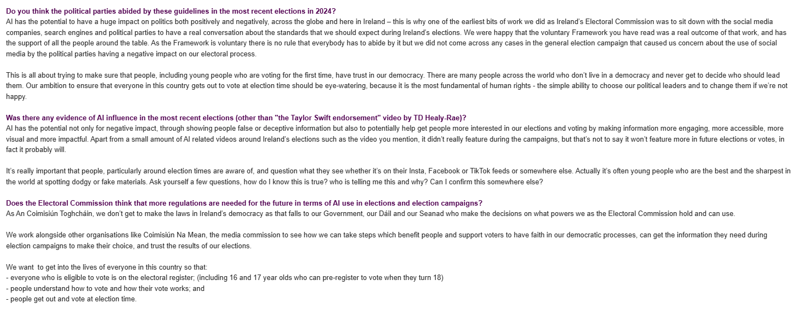

"We are at the start of some of the most significant changes in human history that will result from the increased use of artificial intelligence
(AI) in virtually every area of life. The speed of some of these changes will be exciting or frightening, depending on your perspective."
Malcolm Byrne - Fianna Fáil Senator and the party’s spokesperson on Further & Higher Education, Research, Innovation & Science
With AI becoming more prevolent in everyday life, the question has arrisen as to the effect it will have on elections. When looking at if AI is a threat or an opportunity, it is important to consider the aplication. AI is a tool, and like any tool, it can be used for good or bad. The use of AI in elections is no different. It can be used to enhance the democratic process, but it can also be used to undermine it.
Here are some threats and opportunities for the use of AI in elections:
Threats
- Generative AI can be used to create fake news, videos and speeches, misleading and manipulating public opinion.
- While AI tools have strict nominal guidelines as to influencing voters towards political candidates, some platforms could have bias against certain candidates.
- Propaganda bots can be programmed to push narratives and gain more traction over legitimate sources.
- Misuse of AI can lead to loss of trust and voters being discouraged from voting.
Opportunities
- Better accessibility for voters with disabilities and language barriers.
- Improves voter engagement by educating voters about candidates and policies.
- AI can analyse social media to help politicians create policies based on public concerns.
- AI can detect and enact countermeasures against cyber threats.
Ireland's Electoral Commission
In 2024, the Irish government announced the establishment of an independent Electoral Commission to oversee elections and referendums. The commission is be responsible for ensuring the integrity of the electoral process, including the use of AI in political campaigns. The commission works to educate voters about the potential risks and benefits of AI in elections. They have published a frameworks that both political parties and media organisations are encouraged to stick to. However this is not law.
Videos
According to the Alan Turing Institute, 112 nations worldwide held elections between January 2023 and May 2024. 19 of those were identified by the ATI to have AI influence. While they found the interference appeared to have had little consequence on the results, there were secondary effects on trust and polarisation.
AI as a Threat
AI as an opportunity
Images of AI Threats and Opportunities.
AI generated image of Simon Harris in a pink suit. It's not overly harmful, but the purpose could be to ridicule him.
AI generated image of Trump. Intended to make him look good, ended up with 7 fingers.

Picture of ChatGPT giving a basic rundown of 3 political parties.